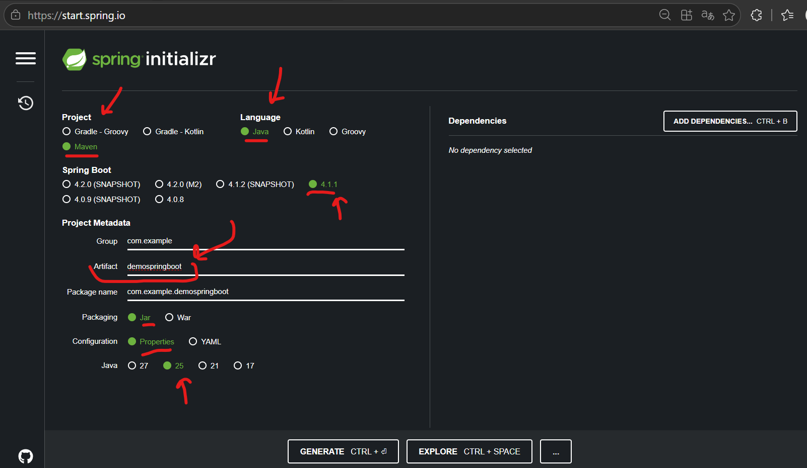
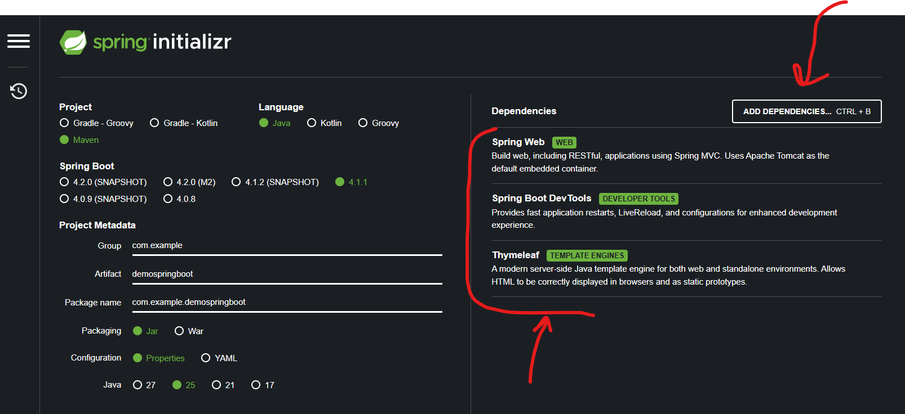
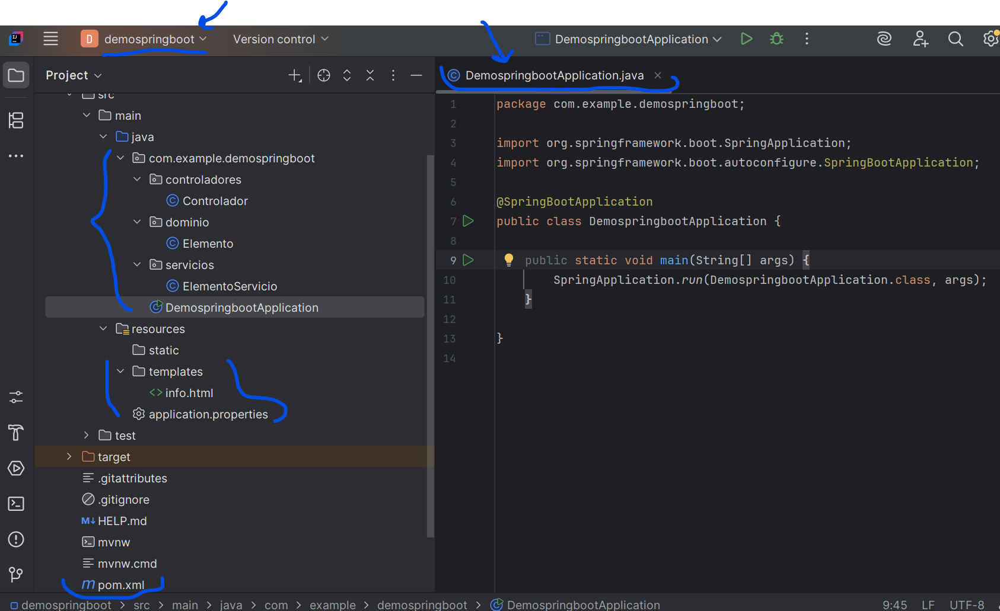

01Expresiones Thymeleaf
Los atributos Thymeleaf conectan los datos preparados por el controlador con la plantilla HTML.
Mostrar un valor con th:text
<p th:text="${mensaje}"></p>Recorrer una colección con th:each
<ul>
<li th:each="item : ${items}" th:text="${item}"></li>
</ul>Mostrar contenido condicionalmente
<p th:if="${mostrar}">
Este texto se muestra si 'mostrar' es verdadero.
</p>
<p th:unless="${mostrar}">
Este texto se muestra si 'mostrar' es falso.
</p>02Fragmentos Thymeleaf
fragmentos.html
<!DOCTYPE html>
<html lang="es" xmlns:th="http://www.thymeleaf.org">
<body>
<div th:fragment="encabezado">
<h1>Bienvenido a mi sitio</h1>
</div>
</body>
</html>pagina.html: incluir el fragmento
<!DOCTYPE html>
<html lang="es" xmlns:th="http://www.thymeleaf.org">
<body>
<div th:replace="~{fragmentos :: encabezado}"></div>
</body>
</html>Se completa el documento de inclusión y se escribe la sintaxis de fragmento como ~{plantilla :: fragmento}.
03Layouts Thymeleaf
base.html
<!DOCTYPE html>
<html lang="es" xmlns:th="http://www.thymeleaf.org">
<head>
<title>Mi Aplicación</title>
</head>
<body>
<header><h1>Encabezado</h1></header>
<main th:fragment="contenido">
<!-- Contenido específico de cada página -->
</main>
<footer><p>Pie de página</p></footer>
</body>
</html>pagina.html: extender el layout
<!DOCTYPE html>
<html lang="es"
xmlns:th="http://www.thymeleaf.org"
xmlns:layout="http://www.ultraq.net.nz/thymeleaf/layout">
<head>
<title>Página específica</title>
</head>
<body layout:decorate="~{base}">
<div layout:fragment="contenido">
<h2>Contenido específico de la página</h2>
</div>
</body>
</html>El atributo layout:decorate requiere Thymeleaf Layout Dialect, además de Thymeleaf.
04Inyección de dependencias Spring
El servicio de pedidos depende del servicio de usuarios. Spring puede crear ambos beans y conectar la dependencia.
Configuración XML citada
<beans xmlns="http://www.springframework.org/schema/beans"
xmlns:xsi="http://www.w3.org/2001/XMLSchema-instance"
xsi:schemaLocation="http://www.springframework.org/schema/beans
https://www.springframework.org/schema/beans/spring-beans.xsd">
<bean id="servicioUsuario" class="com.ejemplo.ServicioUsuario" />
<bean id="servicioPedido" class="com.ejemplo.ServicioPedido">
<constructor-arg ref="servicioUsuario" />
</bean>
</beans>Configuración Java con @Configuration y @Bean
import org.springframework.context.annotation.Bean;
import org.springframework.context.annotation.Configuration;
@Configuration
public class ConfiguracionApp {
@Bean
public ServicioUsuario servicioUsuario() {
return new ServicioUsuario();
}
@Bean
public ServicioPedido servicioPedido(ServicioUsuario servicioUsuario) {
return new ServicioPedido(servicioUsuario);
}
}05Herramientas Spring
| Herramienta | Uso descrito |
|---|---|
| Spring MVC | Controladores web, rutas, modelo y vistas. |
| Spring Data JPA | Acceso CRUD a datos y repositorios JPA. |
| Spring Security | Autenticación y autorización. |
| Spring Boot | Configuración automática y aplicaciones independientes. |
| Spring Cloud | Herramientas para sistemas basados en microservicios. |
No incluye fragmentos de código para estas herramientas en esta sección.
06Ejemplo Spring Boot: Uso de Initializr
Spring Initializr genera la estructura inicial y los archivos de construcción de un proyecto Spring Boot. La primera captura muestra las opciones generales y la segunda las dependencias seleccionadas.
Configuración del proyecto


Las capturas se muestran desde la carpeta images del módulo.
Abrir y descargar el proyecto
Este enlace abre Spring Initializr con los valores y dependencias de las capturas precargados:
Abrir configuración en Spring Initializr- Revisar los datos del proyecto y la lista de dependencias.
- Seleccionar Generate para descargar el proyecto como ZIP.
- Extraer el ZIP y abrir la carpeta en IntelliJ IDEA u otro IDE compatible con Maven.
Dependencias Maven: pom.xml
El archivo pom.xml se encuentra en la carpeta raíz del proyecto. El bloque <dependencies> va dentro del elemento <project>.
<dependencies>
<dependency>
<groupId>org.springframework.boot</groupId>
<artifactId>spring-boot-starter-web</artifactId>
</dependency>
<dependency>
<groupId>org.springframework.boot</groupId>
<artifactId>spring-boot-devtools</artifactId>
<scope>runtime</scope>
<optional>true</optional>
</dependency>
<dependency>
<groupId>org.springframework.boot</groupId>
<artifactId>spring-boot-starter-thymeleaf</artifactId>
</dependency>
</dependencies>Spring Initializr genera el POM y el Maven Wrapper con las versiones compatibles para Spring Boot 4.1.1. Este fragmento muestra las tres dependencias seleccionadas en las capturas.
Clase de entrada: DemoSpringBootApplication.java
La clase principal se guarda bajo src/main/java. Como el paquete es com.example.demospringboot, su ruta completa dentro del proyecto es src/main/java/com/example/demospringboot/DemoSpringBootApplication.java.
package com.example.demospringboot;
import org.springframework.boot.SpringApplication;
import org.springframework.boot.autoconfigure.SpringBootApplication;
@SpringBootApplication
public class DemoSpringBootApplication {
public static void main(String[] args) {
SpringApplication.run(DemoSpringBootApplication.class, args);
}
}application.properties: src/main/resources/application.properties
server.port=8080Este archivo configura propiedades de la aplicación y se guarda en src/main/resources.
Ubicación de estos archivos
demospringboot/
├── pom.xml
└── src/
└── main/
├── java/
│ └── com/example/demospringboot/
│ └── DemoSpringBootApplication.java
└── resources/
└── application.propertiesLa estructura muestra application.properties dentro de src/main/resources. Los controladores y demás clases Java también se ubican bajo src/main/java/com/example/demospringboot, respetando sus subpaquetes.
07Ejemplo Spring Boot: controlador y vista
Controlador.java
package com.example.demospringboot.controladores;
import org.springframework.stereotype.Controller;
import org.springframework.ui.Model;
import org.springframework.web.bind.annotation.GetMapping;
@Controller
public class Controlador {
@GetMapping("/")
public String info(Model modelo) {
modelo.addAttribute("mensaje", "Universidad Siglo 21");
return "info";
}
}src/main/resources/templates/info.html
<!DOCTYPE html>
<html lang="es" xmlns:th="http://www.thymeleaf.org">
<head>
<meta charset="UTF-8">
<title>Información Spring Boot</title>
</head>
<body>
<h1 th:text="${mensaje}"></h1>
</body>
</html>El controlador agrega mensaje al modelo y devuelve el nombre de plantilla info. Thymeleaf muestra ese valor en el encabezado.
08Mapeo de solicitudes Spring MVC
Estos métodos ilustran los mapeos y parámetros de Spring MVC citados en la lectura. Son ejemplos independientes; las clases de dominio y servicios se representan como tipos ya definidos.
Controlador y GET
import org.springframework.stereotype.Controller;
import org.springframework.ui.Model;
import org.springframework.web.bind.annotation.ControllerAdvice;
import org.springframework.web.bind.annotation.ExceptionHandler;
import org.springframework.web.bind.annotation.GetMapping;
import org.springframework.web.bind.annotation.ModelAttribute;
import org.springframework.web.bind.annotation.PathVariable;
import org.springframework.web.bind.annotation.PostMapping;
import org.springframework.web.bind.annotation.PutMapping;
import org.springframework.web.bind.annotation.RequestBody;
import org.springframework.web.bind.annotation.RequestMapping;
import org.springframework.web.bind.annotation.RequestMethod;
import org.springframework.web.bind.annotation.RequestParam;
import org.springframework.web.bind.annotation.ResponseBody;
@Controller
public class ProductoControlador {
@RequestMapping(value = "/inicio", method = RequestMethod.GET)
public String paginaInicio(Model modelo) {
return "inicio";
}
@GetMapping("/usuarios")
public String obtenerUsuarios(Model modelo) {
// Recuperar usuarios y agregarlos al modelo.
return "usuarios";
}
@GetMapping("/buscar")
public String buscar(@RequestParam("consulta") String consulta,
Model modelo) {
modelo.addAttribute("consulta", consulta);
return "resultadosBusqueda";
}
@GetMapping("/articulos/{idArticulo}")
public String obtenerArticulo(
@PathVariable("idArticulo") Long idArticulo, Model modelo) {
// Recuperar el artículo por su identificador.
return "articulo";
}
}POST, PUT y formulario
@PostMapping("/enviar")
public String enviarFormulario(
@ModelAttribute("datosFormulario") DatosFormulario datosFormulario,
Model modelo) {
// Procesar los datos del formulario.
return "resultado";
}
@PutMapping("/actualizar/{id}")
@ResponseBody
public String actualizarUsuario(
@PathVariable("id") Long id,
@RequestBody Usuario usuario) {
// Actualizar el usuario.
return "actualizado";
}
@PostMapping("/enviarFormulario")
public String procesarFormulario(
@ModelAttribute("datosFormulario") DatosFormulario datosFormulario) {
// Procesar el formulario.
return "resultado";
}Respuesta JSON y manejo de excepciones
@GetMapping("/api/datos")
@ResponseBody
public Datos obtenerDatos() {
return new Datos("ejemplo");
}
@ExceptionHandler(IllegalArgumentException.class)
public String manejarExcepcionIllegalArgument(
IllegalArgumentException excepcion, Model modelo) {
modelo.addAttribute("error", excepcion.getMessage());
return "error";
}
}09Servicios Spring y ciclo de vida
Servicio transaccional
import org.springframework.stereotype.Service;
import org.springframework.transaction.annotation.Transactional;
@Service
@Transactional
public class ProductoServicio {
public void procesarOperacion() {
// Lógica de negocio y operaciones transaccionales.
}
}Inyección de servicio en un controlador
@Controller
public class ProductoControlador {
private final ProductoServicio productoServicio;
public ProductoControlador(ProductoServicio productoServicio) {
this.productoServicio = productoServicio;
}
@GetMapping("/productos")
public String listarProductos(Model modelo) {
modelo.addAttribute("productos",
productoServicio.obtenerTodosLosProductos());
return "productos";
}
}Inicialización y limpieza del bean
import jakarta.annotation.PostConstruct;
import jakarta.annotation.PreDestroy;
import org.springframework.stereotype.Service;
@Service
public class ServicioInicializable {
@PostConstruct
public void init() {
// Inicialización después de crear el bean.
}
@PreDestroy
public void cleanup() {
// Liberación de recursos antes de destruir el bean.
}
}La lectura ejemplifica @Autowired en un campo; el constructor muestra inyección explícita de dependencia. En Spring Framework 6 se usan las anotaciones jakarta.annotation; proyectos anteriores pueden requerir javax.annotation.
10Ejemplo Spring Boot: dominio
Elemento.java
package com.example.demospringboot.dominio;
public class Elemento {
private String nombre;
public Elemento(String nombre) {
this.nombre = nombre;
}
public String getNombre() {
return nombre;
}
public void setNombre(String nombre) {
this.nombre = nombre;
}
}11Ejemplo Spring Boot: servicio
ElementoServicio.java
package com.example.demospringboot.servicios;
import com.example.demospringboot.dominio.Elemento;
import org.springframework.stereotype.Service;
import java.util.Arrays;
import java.util.List;
@Service
public class ElementoServicio {
public List<Elemento> obtenerElementos() {
return Arrays.asList(
new Elemento("Elemento 1"),
new Elemento("Elemento 2"),
new Elemento("Elemento 3")
);
}
}12Ejemplo Spring Boot: controlador
Controlador.java
package com.example.demospringboot.controladores;
import com.example.demospringboot.dominio.Elemento;
import com.example.demospringboot.servicios.ElementoServicio;
import java.util.List;
import org.springframework.stereotype.Controller;
import org.springframework.ui.Model;
import org.springframework.web.bind.annotation.GetMapping;
@Controller
public class Controlador {
private final ElementoServicio elementoServicio;
public Controlador(ElementoServicio elementoServicio) {
this.elementoServicio = elementoServicio;
}
@GetMapping("/")
public String info(Model modelo) {
modelo.addAttribute("mensaje", "Demo Spring Boot");
List<Elemento> elementos = elementoServicio.obtenerElementos();
modelo.addAttribute("elementos", elementos);
return "info";
}
}13Ejemplo Spring Boot: Thymeleaf
src/main/resources/templates/info.html
<!DOCTYPE html>
<html lang="es" xmlns:th="http://www.thymeleaf.org">
<head>
<meta charset="UTF-8">
<title>Información Spring Boot</title>
</head>
<body>
<h1 th:text="${mensaje}"></h1>
<h1>Lista de Elementos</h1>
<ul>
<li th:each="elemento : ${elementos}"
th:text="${elemento.nombre}"></li>
</ul>
</body>
</html>El controlador entrega la lista bajo la clave elementos; Thymeleaf crea un elemento de lista para cada objeto y muestra su nombre.
14Ejemplo: código de proyecto
El código del ejemplo se presenta en las secciones de uso de Initializr, dominio, servicio, controlador y vista Thymeleaf.
El proyecto del ejemplo, programado en Java con Spring Boot, está disponible en el repositorio construccion-software-basic: demospringboot.

